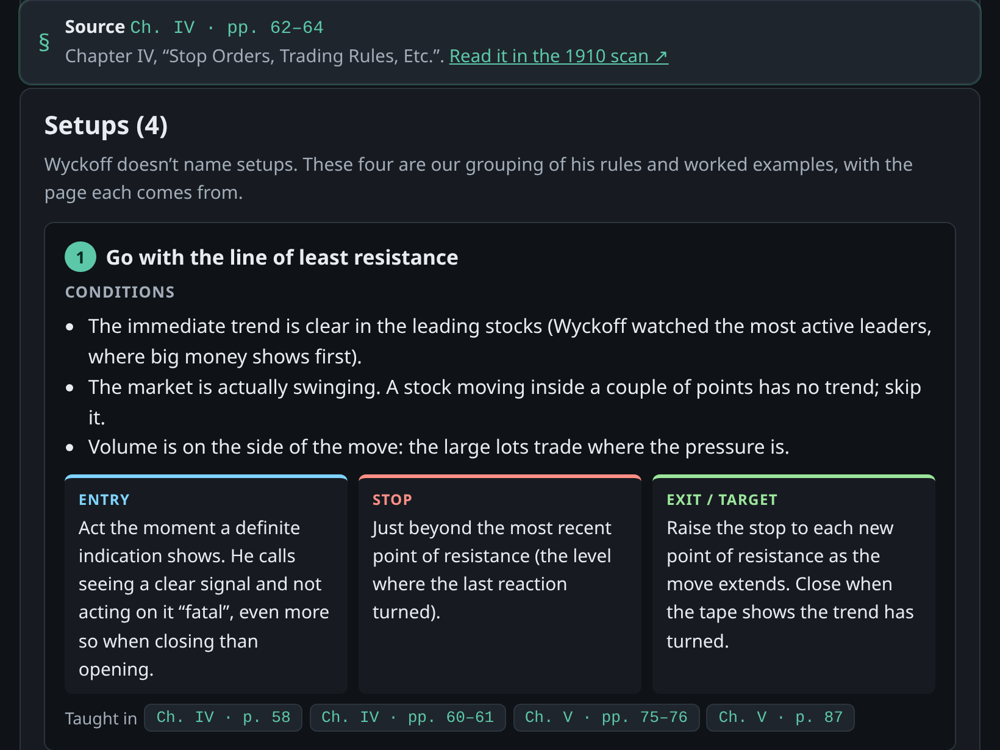

In development · for traders who study long video courses
Turn a 3-hour trading course into a one-page playbook.
We’re building a desktop app that pulls a course’s setups and its entry, stop and exit rules onto one page, each linked to the minute it’s taught. It runs on your computer with your own AI key. Below is the format, made from a 1910 trading classic.
- The teacher’s rules, not ours: conditions, entry, stop and exit for each setup. No picks, no signals.
- A one-page checklist to print or save as a PDF.
- Every line points to its source, so you can check us: the page in this sample, the timestamp once video works.
- Your computer, your AI key, one price. Your playbooks stay on your machine, and your AI provider bills you directly for what you use. Planned as a one-time purchase: $49, with 12 months of updates.
Read the free sample Join the waitlist
Nothing to buy yet. The sample is free.

Free sample
Studies in Tape Reading (1910), as a playbook
Richard D. Wyckoff wrote this under the pen name “Rollo Tape.” It’s dense with concrete rules on stops, volume and exits, which makes it a good test of the format. Every line below points to the page it came from.
Open it in the library view to save favorites and your own notes.
In development: the desktop app
Next: paste a course link, get its playbook, on your own computer.
Not built yet. This sample was made from a book to show the format. The plan: a desktop app where you paste a public YouTube link, your own Google Gemini key does the reading, and the playbook is saved on your machine, with timestamps in place of page numbers. We build it only if enough traders want it.
Questions
- Do I need an API key?
- Yes, once the app ships. The plan is to start with a Google Gemini API key, which you create in your own Google account. Google’s API is available in many countries but not all, and you must be 18 or older to use it. Where it’s available, Google offers a free tier with daily limits; on the free tier, Google says it may use what you send to improve its products. You pay Google directly for paid usage. If you’re in the EU/EEA, the UK or Switzerland, plan on a billing-enabled (paid) key. We may add other providers later, but we’re not promising that yet. You don’t need a key to read the free sample.
- Is my key sent anywhere?
- Only to the AI provider you choose, with each request, because that’s how their API works. We’re designing the app to save your key in your operating system’s own password storage: Keychain on Mac, Credential Manager on Windows, and the system keyring (Secret Service) on Linux where one is installed. We won’t run any server that receives your key, your videos or your playbooks, and license checks and update downloads won’t include your key. This is a design commitment for an app that isn’t built yet, so it hasn’t been tested or independently audited. Like any saved password, your key is only as safe as your computer account.
- Do I keep paying for the app?
- No. You pay once to download the app, and 12 months of updates are included. After that, it keeps working, and newer updates would be optional. Separately, your AI provider bills you for what you use. Our rough estimate, at Google’s current list price for its low-cost Gemini 3.5 Flash-Lite model, is about $0.12 per hour of video at standard detail, and roughly three times that at high detail. Bigger models cost more. Google currently says YouTube links are available at no charge while that feature is in preview. Prices, models and the preview can all change, so check Google’s pricing page before you rely on these numbers.
- What will it cost?
- The planned price is $49, paid once, with 12 months of updates included. There’s nothing to buy today. The optional price question in the waitlist form helps us check that.
- How does it read a YouTube video?
- It sends the video’s public link to Google Gemini using your key, and Google’s model reads the video. The app doesn’t download videos or scrape transcripts. It works only with public videos, not private or unlisted ones. On Google’s free tier, you can process up to 8 hours of YouTube video a day. Google says this feature is in preview and its limits may change.
- Is this trading advice?
- No. It organizes what a teacher said into notes you can check against the source. It doesn’t pick trades or send signals, and AI output can be wrong, so always check the timestamp or page.
Waitlist
Hear when the app is ready
We’ll email you about the Playbook test and when the app is ready. Unsubscribe anytime. A few optional questions help us decide whether, and how, to build it.
The waitlist form is hosted by Tally. It asks for your email, your consent, and a few optional questions.